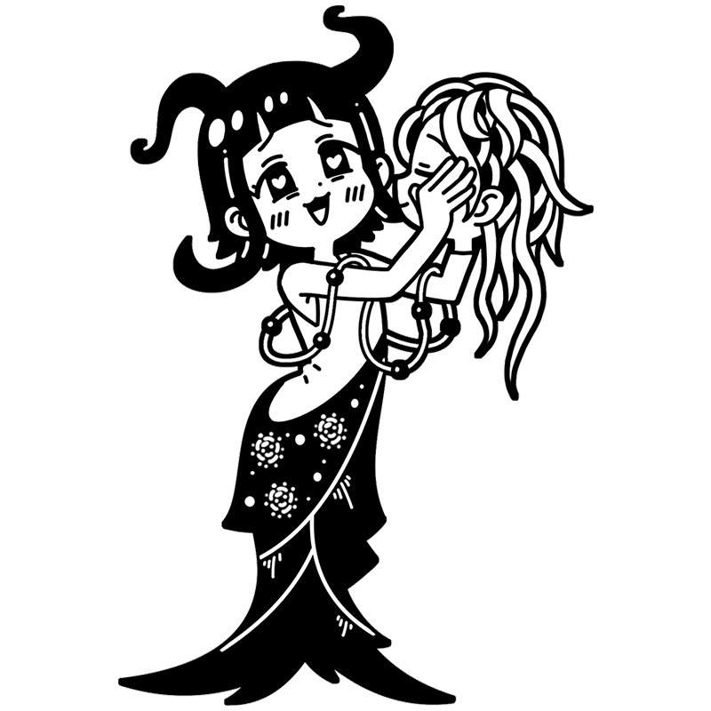

ウッフッフッ。これこれ～っ！
この感触が……タ・マ・ラ・ナ・イ♥
ビアズリー
破滅を求める愛のミューズは
ペンを操り美に耽ける
19世紀イギリスでイラストレーターとして活躍したミューズ。戯曲などを題材とした破滅的、官能的な作品群は「耽美主義」を世に広めた。本人も大した偏執狂であり、一度愛したものは地の果てまでも執着する。
様式
アール・ヌーヴォー
出身国
イギリス
代表作
- 『お前に接吻するよ、ヨカナーン』
- 『ジークフリート』
- 『イエローブック』など
ビアズリーといえばこの一枚！
お前に接吻するよ、ヨカナーン
イギリスの作家オスカー・ワイルドの戯曲「サロメ」のための挿絵の一枚。エロデ王の娘、サロメが預言者ヨカナーン(ヨハネ)の首に口づけするクライマックスシーンであり、『お前に接吻するよ、ヨカナーン』という通称で呼ばれることが多い。モノクロながら、耽美主義の名に恥じぬ蠱惑的な作品になっている。
制作年
1893年
技法・材質
インク、紙
寸法
34.2 x 27.2 cm
所蔵
ヴィクトリア・アンド・アルバート博物館
(イギリス)
作品画像出典: https://ja.m.wikipedia.org/wiki/%E3%83%95%E3%82%A1%E3%82%A4%E3%83%AB:Aubrey_Beardsley_-_The_Climax.jpg
ビアズリーってどんな芸術家？
オーブリー・ビアズリー
19世紀末イギリスを代表する挿絵画家(イラストレーター)であり、世紀末美術(デカダンス)を象徴する存在。『サロメ』の挿絵に見られるような白と黒を基調とした、退廃的で挑発的な表現を得意とした。若くして結核で夭折したが、25年の人生の間に残した作品は近代のイラストレーションにも大きな影響を与えている。駆け出しの頃は会社員として働く傍ら独学で絵を描く、いわゆる兼業画家であった。
フルネーム
Aubrey Vincent Beardsley
誕生
1872年8月21日
死没
1898年3月16日(25歳没)